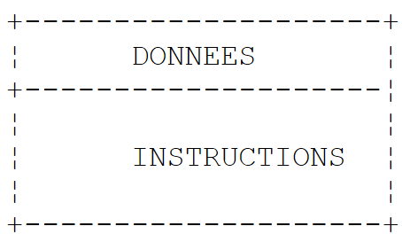

2. The Basics of the VB.NET Language
2.1. Introduction
We will first treat VB.NET as a traditional programming language. We will cover objects later.
In a program, there are two things
- data
- the instructions that manipulate them
We generally strive to separate data from instructions:
 |
2.2. VB.NET Data
VB.NET uses the following data types:
- integers, reals, and decimals
- characters and strings
- Booleans
- dates
- objects
2.2.1. Predefined data types
VB type | Equivalent .NET type | Size | Value range |
Boolean | System.Boolean | 2 bytes | True or False. |
Byte | System.Byte | 1 byte | 0 to 255 (unsigned). |
Char | System.Char | 2 bytes | 0 to 65,535 (unsigned). |
Date | System.DateTime | 8 bytes | 0:00:00 on January 1, 0001 to 23:59:59 on December 31, 9999. |
Decimal | System.Decimal | 16 bytes | 0 to +/-79,228,162,514,264,337,593,543,950,335 without decimals; 0 to +/-7.9228162514264337593543950335 with 28 decimals; the smallest non-zero number being +/-0.0000000000000000000000000001 (+/-1E-28). |
Double | System.Double | 8 bytes | -1.79769313486231E+308 to -4.94065645841247E-324 for negative values; 4.94065645841247E-324 to 1.79769313486231E+308 for positive values. |
Integer | System.Int32 | 4 bytes | -2,147,483,648 to 2,147,483,647. |
Long | System.Int64 | 8 bytes | -9,223,372,036,854,775,808 to 9,223,372,036,854,775,807. |
Object | System.Object | 4 bytes | Any type can be stored in a variable of type Object. |
Short | System.Int16 | 2 bytes | -32,768 to 32,767. |
Single | System.Single | 4 bytes | -3.402823E+38 to -1.401298E-45 for negative values; 1.401298E-45 to 3.402823E+38 for positive values. |
String | System.String (class) | 0 to approximately 2 billion Unicode characters. |
In the table above, we see that there are two possible types for a 32-bit integer: Integer and System.Int32. The two types are interchangeable. The same applies to other VB types and their equivalents in the .NET platform. Here is a sample program:
Module types
Sub Main()
' integers
Dim var1 As Integer = 100
Dim var2 As Long = 10000000000L
Dim var3 As Byte = 100
Dim var4 As Short = 4
' real numbers
Dim var5 As Decimal = 4.56789D
Dim var6 As Double = 3.4
Dim var7 As Single = -0.000103F
' date
Dim var8 As Date = New Date(2003, 1, 1, 12, 8, 4)
' Boolean
Dim var9 As Boolean = True
' character
Dim var10 As Char = "A"c
' string
Dim var11 As String = "abcde"
' object
Dim var12 As Object = New Object
' displays
Console.Out.WriteLine("var1=" + var1.ToString)
Console.Out.WriteLine("var2=" + var2.ToString)
Console.Out.WriteLine("var3=" + var3.ToString)
Console.Out.WriteLine("var4=" + var4.ToString)
Console.Out.WriteLine("var5=" + var5.ToString)
Console.Out.WriteLine("var6=" + var6.ToString)
Console.Out.WriteLine("var7=" + var7.ToString)
Console.Out.WriteLine("var8=" + var8.ToString)
Console.Out.WriteLine("var9=" + var9.ToString)
Console.Out.WriteLine("var10=" + var10)
Console.Out.WriteLine("var11=" + var11)
Console.Out.WriteLine("var12=" + var12.ToString)
End Sub
End Module
The execution produces the following results:
var1=100
var2=10000000000
var3=100
var4=4
var5=4.56789
var6=3.4
var7=-0.000103
var8=01/01/2003 12:08:04
var9=True
var10 = A
var11 = abcde
var12 = System.Object
2.2.2. Literal data notation
145, -7, &FF (hexadecimal) | |
100000L | |
134.789, -45E-18 (-45 × 10⁻¹⁸) | |
134.789F, -45E-18F (-45 × 10⁻¹⁸) | |
100000D | |
"A"c | |
"today" | |
true, false | |
New Date(2003, 1, 1) for 01/01/2003 |
Note the following points:
- 100000L, where L indicates that the number is treated as a long integer
- 134.789F, where F indicates that the number is treated as a single-precision floating-point number
- 100000D, where D indicates that the number is treated as a decimal real
- "A"c, to convert the character string "A" to the character 'A'
- The string is enclosed in the character ". If the string must contain the character ", it is doubled, as in "abcd""e" to represent the string [abcd"e].
2.2.3. Data Declaration
2.2.3.1. Role of declarations
A program manipulates data characterized by a name and a type. This data is stored in memory. When the program is compiled, the compiler assigns each piece of data a memory location characterized by an address and a size. It does this using the declarations made by the programmer. Furthermore, these declarations allow the compiler to detect programming errors. Thus, the operation x = x \* 2 will be declared an error if x is a string, for example.
2.2.3.2. Declaration of Constants
The syntax for declaring a constant is as follows:
const identifier as type=value
For example, [const PI as double=3.141592]. Why declare constants?
- The program will be easier to read if the constant is given a meaningful name: [const VAT_rate as single=0.186F]
- Modifying the program will be easier if the "constant" needs to be changed. Thus, in the previous case, if the VAT rate changes to 33%, the only modification needed will be to change the statement defining its value: [const vatrate as single=0.336F]. If 0.186 had been used explicitly in the program, numerous statements would need to be modified.
2.2.3.3. Variable Declaration
A variable is identified by a name and refers to a data type. VB.NET does not distinguish between uppercase and lowercase letters. Thus, the variables FIN and fin are identical. Variables can be initialized when they are declared. The syntax for declaring one or more variables is:
dim variable1,variable2,...,variablen as type_identifier
where type_identifier is a predefined type or a type defined by the programmer.
2.2.4. Conversions between numbers and strings
number.ToString or "" & number or CType(number, String) | |
object.ToString | |
Integer.Parse(string) or Int32.Parse | |
Long.Parse(string) or Int64.Parse | |
Double.Parse(string) | |
Single.Parse(string) |
Converting a string to a number may fail if the string does not represent a valid number. This results in a fatal error, known as an exception in VB.NET. This error can be handled using the following try/catch block:
try
call to the function likely to generate the exception
catch e as Exception
handle the exception e
end try
next statement
If the function does not generate an exception, we proceed to the next statement; otherwise, we enter the body of the catch clause and then proceed to the next statement. We will return to exception handling later. Here is a program demonstrating the main techniques for converting between numbers and strings. In this example, the function display prints the value of its parameter to the screen. Thus, display(S) prints the value of S to the screen.
' directives
Option Strict On
' imported namespaces
Imports System
' the test module
Module Module1
Sub Main()
' main procedure
' local data
Dim S As String
Const i As Integer = 10
Const l As Long = 100000
Const f As Single = 45.78F
Dim d As Double = -14.98
' number --> string
display(CType(i, String))
display(CType(l, String))
display(CType(f, String))
display(CType(d, String))
'boolean --> string
Const b As Boolean = False
display(b.ToString)
' string --> int
Dim i1 As Integer = Integer.Parse("10")
display(i1.ToString)
Try
i1 = Integer.Parse("10.67")
display(i1.ToString)
Catch e As Exception
display("Error [10.67]: " + e.Message)
End Try
' string --> long
Dim l1 As Long = Long.Parse("100")
display("" + l1.ToString)
Try
l1 = Long.Parse("10.675")
display("" & l1)
Catch e As Exception
display("Error [10.675]: " + e.Message)
End Try
' string --> double
Dim d1 As Double = Double.Parse("100.87")
display(d1.ToString)
Try
d1 = Double.Parse("abcd")
display("" & d1)
Catch e As Exception
print("Error [abcd]: " + e.Message)
End Try
' string --> single
Dim f1 As Single = Single.Parse("100.87")
display(f1.ToString)
Try
d1 = Single.Parse("abcd")
display(f1.ToString)
Catch e As Exception
display("Error [abcd]: " + e.Message)
End Try
End Sub
' display
Public Sub display(ByVal S As String)
Console.Out.WriteLine("S=" + S)
End Sub
End Module
The results are as follows:
S=10
S=100000
S=45.78
S=-14.98
S=False
S=10
S=Error [10.67]: The format of the input string is incorrect.
S=100
S=Error [10.675]: The format of the input string is incorrect.
S=100.87
S=Error [abcd]: The input string format is incorrect.
S=100.87
S=Error [abcd]: The format of the input string is incorrect.
Note that real numbers in string form must use a comma, not a decimal point. Thus, we write Dim d As Double = -14.98 but Dim d1 As Double = Double.Parse("100.87")
2.2.5. Data Arrays
A VB.NET array is an object that allows data of the same type to be grouped under a single identifier. It is declared as follows:
Dim Array(n) As Type or Dim Array() As Type = New Type(n) {}
where n is the index of the last array element. The syntax Array(i) refers to the data at index i, where i belongs to the range [0,n]. Any reference to the data Array(i) where i does not belong to the range [0,n] will cause an exception. An array can be initialized at the same time it is declared. In this case, there is no need to specify the index of the last element.
Dim integers() As Integer = {0, 10, 20, 30}
Arrays have a Length property, which is the number of elements in the array. Here is an example program:
Module tab0
Sub Main()
' a first array
Dim tab0(5) As Integer
For i As Integer = 0 To UBound(tab0)
tab0(i) = i
Next
For i As Integer From 0 To UBound(tab0)
Console.Out.WriteLine("tab0(" + i.ToString + ")=" + tab0(i).ToString)
Next
' a second array
Dim tab1() As Integer = New Integer(5) {}
For i As Integer = 0 To tab1.Length - 1
tab1(i) = i * 10
Next
For i As Integer = 0 To tab1.Length - 1
Console.Out.WriteLine("tab1(" + i.ToString + ")=" + tab1(i).ToString)
Next
End Sub
End Module
and its execution:
tab0(0)=0
tab0(1)=1
tab0(2)=2
tab0(3)=3
tab0(4)=4
tab0(5)=5
tab1(0)=0
tab1(1)=10
tab1(2)=20
tab1(3)=30
tab1(4)=40
tab1(5)=50
A two-dimensional array can be declared as follows:
Dim Array(n,m) as Type or Dim Array(,) as Type = New Type(n,m) {}
where n+1 is the number of rows, m+1 the number of columns. The syntax Array(i,j) refers to element j in row i of Array. The two-dimensional array can also be initialized at the same time it is declared:
Dim reals(,) As Double = {{0.5, 1.7}, {8.4, -6}}
The number of elements in each dimension can be obtained using the GetLength(i) method, where i=0 represents the dimension corresponding to the first index, i=1 the dimension corresponding to the second index, …Here is an example program:
Module Module2
Sub Main()
' a first array
Dim tab0(2, 1) As Integer
For i As Integer = 0 To UBound(tab0)
For j As Integer = 0 To tab0.GetLength(1) - 1
tab0(i, j) = i * 10 + j
Next
Next
For i As Integer = 0 To UBound(tab0)
For j As Integer = 0 To tab0.GetLength(1) - 1
Console.Out.WriteLine("tab0(" + i.ToString + "," + j.ToString + ")=" + tab0(i, j).ToString)
Next
Next
' a second array
Dim tab1(,) As Integer = New Integer(2, 1) {}
For i As Integer = 0 To tab1.GetLength(0) - 1
For j As Integer = 0 To tab1.GetLength(1) - 1
tab1(i, j) = i * 100 + j
Next
Next
For i As Integer = 0 To tab1.GetLength(0) - 1
For j As Integer = 0 To tab1.GetLength(1) - 1
Console.Out.WriteLine("tab1(" + i.ToString + "," + j.ToString + ")=" + tab1(i, j).ToString)
Next
Next
End Sub
End Module
and the results of its execution:
tab0(0)=0
tab0(1)=1
tab0(2)=2
tab0(3)=3
tab0(4)=4
tab0(5)=5
tab1(0)=0
tab1(1)=10
tab1(2)=20
tab1(3)=30
tab1(4)=40
tab1(5)=50
An array of arrays is declared as follows:
Dim Array(n)() As Type or Dim Array()() As Type = New Type(n)()
The declaration above creates an array of n+1 rows. Each element Array(i) is a one-dimensional array reference. These arrays are not created during the declaration above. The example below illustrates the creation of an array of arrays:
' an array of arrays
Dim names()() As String = New String(3)() {}
' initialization
For i = 0 To names.Length - 1
names(i) = New String(i) {}
For j = 0 To names(i).Length - 1
names(i)(j) = "name" & i & j
Next
Next
Here, names(i) is an array of i+1 elements. Since names(i) is an array, names(i).Length is the number of elements it contains. Here is an example combining the three types of arrays we just discussed:
' directives
Option Strict On
Option Explicit On
' imports
Imports System
' test class
Test Module
Sub main()
' a 1-dimensional array initialized
Dim integers() As Integer = {0, 10, 20, 30}
Dim i As Integer
For i = 0 To integers.Length - 1
Console.Out.WriteLine("integers[" & i & "]=" & integers(i))
Next
' a 2-dimensional array initialized
Dim reals(,) As Double = {{0.5, 1.7}, {8.4, -6}}
Dim j As Integer
For i = 0 To reals.GetLength(0) - 1
For j = 0 To reals.GetLength(1) - 1
Console.Out.WriteLine("reals[" & i & "," & j & "]=" & reals(i, j))
Next
Next
' an array of arrays
Dim names()() As String = New String(3)() {}
' initialization
For i = 0 To names.Length - 1
names(i) = New String(i) {}
For j = 0 To names(i).Length - 1
names(i)(j) = "name" & i & j
Next
Next
' display
For i = 0 To names.Length - 1
For j = 0 To names(i).Length - 1
Console.Out.WriteLine("names[" & i & "][" & j & "]=" & names(i)(j))
Next
Next
End Sub
End Module
When executed, we get the following results:
integers[0]=0
integers[1]=10
integers[2]=20
integers[3]=30
reals[0,0]=0.5
reals[0,1] = 1.7
reals[1,0]=8.4
reals[1,1]=-6
names[0][0]=name00
names[1][0]=name10
names[1][1]=name11
names[2][0]=name20
names[2][1]=name21
names[2][2]=name22
names[3][0]=name30
names[3][1]=name31
names[3][2]=name32
names[3][3] = name33
2.3. Basic VB.NET statements
We distinguish between
1 the basic instructions executed by the computer.
2 instructions that control the flow of the program.
Basic instructions become clear when considering the structure of a microcomputer and its peripherals.
 |
-
Reading information from the keyboard
-
Information processing
-
Writing information to the screen
-
reading information from a disk file
-
Writing information to a disk file
2.3.1. Writing to the screen
There are various instructions for writing to the screen:
where expression is any data type that can be converted to a string to be displayed on the screen. In the examples seen so far, we have only used the Console.Out.WriteLine(expression) statement.
The System.Console class provides access to screen-writing operations (Write, WriteLine). The Console class has two properties, Out and Error, which are StreamWriter-type write streams:
- Console.WriteLine() is equivalent to Console.Out.WriteLine() and writes to the Out stream, which is usually associated with the screen.
- Console.Error.WriteLine() writes to the Error stream, which is also usually associated with the screen.
The Out and Error streams are associated with the screen by default. However, they can be redirected to text files at runtime, as we will see shortly.
2.3.2. Reading data typed on the keyboard
The data stream from the keyboard is represented by the Console.In object of type StreamReader. This type of object allows you to read a line of text using the ReadLine method:
Dim line As String = Console.In.ReadLine()
The line typed on the keyboard is stored in the variable line* and can then be used by the program. The In stream can be redirected to a file, just like the Out and Error* streams.
2.3.3. Input/Output Example
Here is a short program illustrating keyboard/screen input/output operations:
' options
Option Explicit On
Option Strict On
' namespaces
Imports System
' module
Module io1
Sub Main()
' Write to the Out stream
Dim obj As New Object
Console.Out.WriteLine(("" & obj.ToString))
' Write to the Error stream
Dim i As Integer = 10
Console.Error.WriteLine(("i=" & i))
' reading a line entered from the keyboard
Console.Out.Write("Type a line: ")
Dim line As String = Console.In.ReadLine()
Console.Out.WriteLine(("line=" + line))
End Sub
End Module
and the results of the execution:
The instructions
Dim obj As New Object
Console.Out.WriteLine(obj.ToString)
are only there to show that any object can be displayed. We will not attempt here to explain the meaning of what is displayed.
2.3.4. I/O Redirection
In DOS/Windows, there are three standard input devices called:
- standard input device—by default refers to the keyboard and is numbered 0
- standard output device - defaults to the screen and is numbered 1
- standard error device—by default refers to the screen and is numbered 2
In VB.NET, the Console.Out output stream writes to device 1, the Console.Error output stream writes to device 2, and the Console.In input stream reads data from device 0. When you run a program in a DOS window under Windows, you can specify which devices will be 0, 1, and 2 for the running program. Consider the following command line:
After the arguments argi of the pg program, you can redirect the standard I/O devices to files:
Standard input stream #0 is redirected to the file in.txt. In the program, the Console.In stream will therefore read its data from the file in.txt. | |||
redirects output stream #1 to the file out.txt. This means that in the program, the Console.Out stream will write its data to the file out.txt | |||
Same as above, but the written data is appended to the current contents of the out.txt file. | |||
redirects output #2 to the error.txt file. This means that in the program, the Console.Error stream will write its data to the error.txt file | |||
Same as above, but the written data is appended to the current contents of the error.txt file. | |||
Devices 1 and 2 are both redirected to files | |||
Note that to redirect the I/O streams of the pg program to files, the pg program does not need to be modified. It is the OS that determines the nature of devices 0, 1, and 2. Consider the following program:
' options
Option Explicit On
Option Strict On
' namespaces
Imports System
' redirects
Module console2
Sub Main()
' read input stream
Dim data As String = Console.In.ReadLine()
' Write to Out stream
Console.Out.WriteLine(("Writing to Out stream: " + data))
' Write to Error stream
Console.Error.WriteLine(("Writing to Error stream: " + data))
End Sub
End Module
Let's compile this program:
dos>vbc es2.vb
Microsoft® Visual Basic .NET Compiler version 7.10.3052.4 for Microsoft® .NET Framework version 1.1.4322.573
Copyright (C) Microsoft Corporation 1987-2002. All rights reserved.
dos>dir
02/24/2004 3:39 PM 416 es2.vb
03/11/2004 08:20 3,584 es2.exe
Let's run it for the first time:
dos>es2.exe
A first test
writing to the Out stream: a first test
Writing to the Error stream: a first test
The previous execution does not redirect any of the standard I/O streams In, Out, or Error. We will now redirect all three streams. The In stream will be redirected to a file named in.txt, the Out stream to a file named out.txt, and the Error stream to a file named error.txt. This redirection is performed on the command line as follows
Execution yields the following results:
dos>more in.txt
a second test
dos>es2.exe 0<in.txt 1>out.txt 2>error.txt
dos>more out.txt
Writing to the Out stream: a second test
dos>more error.txt
Writing to the Error stream: a second test
It is clear that the Out and Error streams do not write to the same devices.
2.3.5. Assigning the value of an expression to a variable
Here we are interested in the operation variable=expression. The expression can be of the following types: arithmetic, relational, Boolean, or string.
2.3.5.1. List of operators
Action | Language element |
^, –, *, /, \, Mod, +, = | |
=, ^=, *=, /=, \=, +=, -=, &= | |
=, <>, <, >, <=, >=, Like, Is | |
&, + | |
Not, And, Or, Xor, AndAlso, OrElse | |
AddressOf, GetType |
2.3.5.2. Arithmetic expression
The operators for arithmetic expressions are as follows:
^, –, *, /, \, Mod, +, = |
+: addition, -: subtraction, *: multiplication, /: floating-point division, \: integer division quotient, Mod: integer division remainder, ^: exponentiation. Thus, the following program:
' arithmetic operators
Module arithmeticOperators
Sub Main()
Dim i, j As Integer
i = 4 : j = 3
Console.Out.WriteLine(i & "/" & j & "=" & (i / j))
Console.Out.WriteLine(i & "\" & j & "=" & (i \ j))
Console.Out.WriteLine(i & " mod " & j & "=" & (i Mod j))
Dim r1, r2 As Double
r1 = 4.1 : r2 = 3.6
Console.Out.WriteLine(r1 & "/" & r2 & "=" & (r1 / r2))
Console.Out.WriteLine(r1 & "^2=" & (r1 ^ 2))
Console.Out.WriteLine(Math.Cos(3))
End Sub
End Module
gives the following results:
There are various mathematical functions. Here are a few:
| square root |
| Cosine |
| Sine |
| Tangent |
| x to the power of y (x > 0) |
| Exponential |
| Natural logarithm |
| Absolute value |
All of these functions are defined in a .NET class called Math. When using them, you must prefix them with the name of the class in which they are defined. Thus, you would write:
The complete definition of the Math class is as follows:
Represents the natural logarithm base specified by the constant e. | |||
Represents the ratio of a circle's circumference to its diameter, specified by the constant π. | |||
Overloaded. Returns the absolute value of a specified number. | |||
Returns the angle whose cosine is the specified number. | |||
Returns the angle whose sine is the specified number. | |||
Returns the angle whose tangent is the specified number. | |||
Returns the angle whose tangent is the quotient of two specified numbers. | |||
Generates the integer product of two 32-bit numbers. | |||
Returns the smallest integer greater than or equal to the specified number. | |||
Returns the cosine of the specified angle. | |||
Returns the hyperbolic cosine of the specified angle. | |||
Overloaded. Returns the quotient of two numbers, passing the remainder as an output parameter. | |||
Returns e raised to the specified power. | |||
Returns the largest integer less than or equal to the specified number. | |||
Returns the remainder of the division of one number by another. | |||
Overloaded. Returns the logarithm of a specified number. | |||
Returns the base-10 logarithm of a specified number. | |||
Overloaded. Returns the larger of two specified numbers. | |||
Overloaded. Returns the smaller of two numbers. | |||
Returns a specified number raised to the specified power. | |||
Overloaded. Returns the number closest to the specified value. | |||
Overloaded. Returns a value indicating the sign of a number. | |||
Returns the sine of the specified angle. | |||
Returns the hyperbolic sine of the specified angle. | |||
Returns the square root of a specified number. | |||
Returns the tangent of the specified angle. | |||
Returns the hyperbolic tangent of the specified angle. | |||
When a function is declared "overloaded," it means it exists for various types of parameters. For example, the function Abs(x) exists for x of type Integer, Long, Decimal, Single, and Float. For each of these types, there is a separate definition of the Abs function. It is then said to be overloaded.
2.3.5.3. Operators in the evaluation of arithmetic expressions
The operator precedence when evaluating an arithmetic expression is as follows (from highest to lowest):
Category | Operators |
All expressions without operators: functions, parentheses | |
^ | |
+, - | |
*, / | |
\ | |
Mod | |
+, - |
2.3.5.4. Relational expressions
The operators are as follows:
=, <>, <, >, <=, >=, Like, Is |
=: equal to, <>: not equal to, <: less than (strictly), >: greater than (strictly), <=: less than or equal to, >=: greater than or equal to, Like: matches a pattern, Is: object identity. All these operators have the same precedence. They are evaluated from left to right. The result of a relational expression is a Boolean.
String comparison: consider the following program:
' namespaces
Imports System
Module string1
Sub main()
Dim ch1 As Char = "A"c
Dim ch2 As Char = "B"c
Dim ch3 As Char = "a"c
Console.Out.WriteLine("A<B=" & (ch1 < ch2))
Console.Out.WriteLine("A<a=" & (ch1 < ch3))
Dim cat As String = "cat"
Dim dog As String = "dog"
Dim kitten As String = "kitten"
Dim cat2 As String = "CAT"
Console.Out.WriteLine("cat<dog=" & (cat < dog))
Console.Out.WriteLine("cat < kitten=" & (cat < kitten))
Console.Out.WriteLine("cat < CAT=" & (cat < cat2))
Console.Out.WriteLine("kitten like cat*=" & ("kitten" Like "cat*"))
End Sub
End Module
and the result of its execution:
Let there be two characters C1 and C2. They can be compared using the operators: <, <=, =, <>, >, >=. It is their Unicode values—which are numbers—that are compared. According to the Unicode order, the following relationships hold:
space < .. < '0' < '1' < .. < '9' < .. < 'A' < 'B' < .. < 'Z' < .. < 'a' < 'b' < .. < 'z'
Strings are compared character by character. The first inequality encountered between two characters implies an inequality of the same sign for the strings. With these explanations, the reader is invited to examine the results of the previous program.
2.3.5.5. Boolean expressions
The operators are as follows:
Not, And, Or, Xor, AndAlso, OrElse |
Not: logical AND, Or: logical OR, Not: negation, Xor: exclusive OR.
op1 AndAlso op2: if op1 is false, op2 is not evaluated and the result is false.
op1 OrElse op2: if op1 is true, op2 is not evaluated and the result is true.
The precedence of these operators relative to one another is as follows:
Logical NOT | |
And, AndAlso | |
OR, OrElse | |
XOR |
The result of a Boolean expression is a Boolean.
2.3.5.6. Bitwise operations
On the one hand, we find the same operators as the Boolean operators with the same precedence. We also find two shift operators: << and >>. Let i and j be two integers.
shifts i n bits to the left. The incoming bits are zeros. | |
shifts i n bits to the right. If i is a signed integer (signed char, int, long), the sign bit is preserved. | |
performs a bitwise logical AND of i and j. | |
performs a bitwise OR operation on i and j. | |
complements i to 1 | |
performs the XOR of i and j |
Consider the following program:
Module operationsbit
Sub main()
' bit manipulation
Dim i As Short = &H123F
Dim k As Short = &H7123
Console.Out.WriteLine("i<<4=" & (i << 4).ToString("X"))
Console.Out.WriteLine("i>>4=" & (i >> 4).ToString("X"))
Console.Out.WriteLine("k>>4=" & (k >> 4).ToString("X"))
Console.Out.WriteLine("i and 4=" & (i And 4).ToString("X"))
Console.Out.WriteLine("i or 4 =" & (i Or 4).ToString("X"))
Console.Out.WriteLine("not i=" & (Not i).ToString("X"))
End Sub
End Module
Its execution yields the following results:
2.3.5.7. Operator associated with assignment
It is possible to write a+=b, which means a=a+b. The list of operators that can be combined with the assignment operation is as follows:
^=, *=, /=, \=, +=, -=, &= |
2.3.5.8. General operator precedence
Category | Operators |
All expressions without operators | |
^ | |
+, - | |
*, / | |
\ | |
Mod | |
+, - | |
& | |
<<, >> | |
=, <>, <, >, <=, >=, Like, Is, TypeOf...Is | |
Not | |
And, AndAlso | |
OR, OrElse | |
XOR |
When an operand is placed between two operators of the same precedence, the associativity of the operators determines the order in which the operations are performed. All operators are left-associative, meaning that operations are performed from left to right. Precedence and associativity can be controlled using expressions in parentheses.
2.3.5.9. Type conversions
There are a number of predefined functions that allow you to convert from one data type to another. The list is as follows:
These functions accept a numeric expression or a string as an argument. The result type is shown in the following table:
function | Result | Value range of the function parameter |
Boolean | Any valid string or numeric expression. | |
Byte | 0 to 255; fractions are rounded. | |
Char | Any valid String expression; the value can range from 0 to 65,535. | |
Date | Any valid representation of the date and time. | |
Double | -1.79769313486231E+308 to -4.94065645841247E-324 for negative values; 4.94065645841247E-324 to 1.79769313486231E+308 for positive values. | |
Decimal | +/-79,228,162,514,264,337,593,543,950,335 for non-decimal numbers. The range of values for 28-decimal numbers is +/-7.9228162514264337593543950335. The smallest non-zero number is 0.0000000000000000000000000001. | |
Integer | -2,147,483,648 to 2,147,483,647; fractions are rounded. | |
Long | -9,223,372,036,854,775,808 to 9,223,372,036,854,775,807; fractions are rounded. | |
Object | Any valid expression. | |
Short | -32,768 to 32,767; fractions are rounded. | |
Single | -3.402823E+38 to -1.401298E-45 for negative values; 1.401298E-45 to 3.402823E+38 for positive values. | |
String | The values returned by the Cstr function depend on the expression argument. |
Here is an example program:
Module conversion
Sub main()
Dim var1 As Boolean = CBool("true")
Dim var2 As Byte = CByte("100")
Dim var3 As Char = CChar("A")
Dim var4 As Date = CDate("January 30, 2004")
Dim var5 As Double = CDbl("100.45")
Dim var6 As Decimal = CDec("1000.67")
Dim var7 As Integer = CInt("-30")
Dim var8 As Long = CLng("456")
Dim var9 As Short = CShort("-14")
Dim var10 As Single = CSng("56.78")
Console.Out.WriteLine("var1=" & var1)
Console.Out.WriteLine("var2=" & var2)
Console.Out.WriteLine("var3=" & var3)
Console.Out.WriteLine("var4=" & var4)
Console.Out.WriteLine("var5=" & var5)
Console.Out.WriteLine("var6=" & var6)
Console.Out.WriteLine("var7=" & var7)
Console.Out.WriteLine("var8=" & var8)
Console.Out.WriteLine("var9=" & var9)
Console.Out.WriteLine("var10=" & var10)
End Sub
End Module
and the results of its execution:
var1=True
var2=100
var3=A
var4=01/30/2004
var5=100.45
var6=1000.67
var7=-30
var8=456
var9=-14
var10=56.78
You can also use the CType(expression, type) function, as shown in the following program:
Module ctype1
Sub main()
Dim var1 As Boolean = CType("true", Boolean)
Dim var2 As Byte = CType("100", Byte)
Dim var3 As Char = CType("A", Char)
Dim var4 As Date = CType("January 30, 2004", Date)
Dim var5 As Double = CType("100.45", Double)
Dim var6 As Decimal = CType("1000.67", Decimal)
Dim var7 As Integer = CType("-30", Integer)
Dim var8 As Long = CType("456", Long)
Dim var9 As Short = CType("-14", Short)
Dim var10 As Single = CType("56.78", Single)
Dim var11 As String = CType("47.89", String)
Dim var12 As String = 47.89.ToString
Dim var13 As String = "" & 47.89
Console.Out.WriteLine("var1=" & var1)
Console.Out.WriteLine("var2=" & var2)
Console.Out.WriteLine("var3=" & var3)
Console.Out.WriteLine("var4=" & var4)
Console.Out.WriteLine("var5=" & var5)
Console.Out.WriteLine("var6=" & var6)
Console.Out.WriteLine("var7=" & var7)
Console.Out.WriteLine("var8=" & var8)
Console.Out.WriteLine("var9=" & var9)
Console.Out.WriteLine("var10=" & var10)
Console.Out.WriteLine("var11=" & var11)
Console.Out.WriteLine("var12=" & var12)
Console.Out.WriteLine("var13=" & var13)
End Sub
End Module
which produces the following results:
var1=True
var2=100
var3=A
var4=01/30/2004
var5=100.45
var6=1000.67
var7=-30
var8=456
var9=-14
var10=56.78
var11=47.89
var12=47.89
var13=47.89
2.4. Instructions for controlling program execution
2.4.1. Stop
The Exit method defined in the Environment class allows you to stop the execution of a program:
[Visual Basic]
Public Shared Sub Exit(ByVal exitCode As Integer)
stops the current process and returns the value of exitCode to the parent process. The value of exitCode can be used by the parent process. Under DOS, this status variable is returned to DOS in the system variable ERRORLEVEL, whose value can be checked in a batch file. Under Unix, the variable $? retrieves the value of exitCode.
will terminate the program with an exit status of 0.
2.4.2. Simple decision structure
- Each action is on a separate line
- The else clause may be omitted.
You can nest decision structures as shown in the following example:
' options
Option Explicit On
Option Strict On
' namespaces
Imports System
Module if1
Sub main()
Dim i As Integer = 10
If i > 4 Then
Console.Out.WriteLine(i & " is greater than " & 4)
Else
If i = 4 Then
Console.Out.WriteLine(i & " is equal to " & 4)
Else
Console.Out.WriteLine(i & " is < " & 4)
End If
End If
End Sub
End Module
The result obtained:
2.4.3. Case structure
The syntax is as follows:
select case expression
case value_list1
actions1
case value_list2
actions2
...
case else
other_actions
end select
- The type of [expression] must be one of the following types:
- The [case else] clause may be omitted.
- [list_of_values] are possible values of the expression. [lists_of_values] represents a list of conditions condition1, condition2, ..., conditionx. If [expression] satisfies one of the conditions, the actions following the [list_of_values] clause are executed. The conditions can take the following form:
- val1 to val2: true if [expression] belongs to the range [val1,val2]
- val1: true if [expression] is equal to val1
- is > val1: true if [expression] > val1. The keyword [is] may be omitted
- The same applies to the operators =, <, <=, >, >=, <>
- only the actions associated with the first verified condition are executed.
Consider the following program:
' options
Option Explicit On
Option Strict On
' namespaces
Imports System
Module selectcase1
Sub main()
Dim i As Integer = 10
Select Case i
Case 1 To 4, 7 To 8
Console.Out.WriteLine("i is in the range [1,4] or [7,8]")
Case Is > 12
Console.Out.WriteLine("i is greater than 12")
Case Is < 15
Console.Out.WriteLine("i is < 15")
Case Is < 20
Console.Out.WriteLine("i is < 20")
End Select
End Sub
End Module
It produces the following results:
2.4.4. Loop structure
2.4.4.1. Known number of iterations
For counter [ As datatype ] = start To end [ Step step ]
actions
Next [counter]
Actions are performed for each value taken by the variable [counter]. Consider the following program:
' options
Option Explicit On
Option Strict On
' namespaces
Imports System
Module for1
Sub main()
Dim sum As Integer = 0
Dim result As String = "sum("
For i As Integer = 0 To 10 Step 2
sum += i
result += " " + i.ToString
Next
result += ")=" + sum.ToString
Console.Out.WriteLine(result)
End Sub
End Module
The results:
Another iteration structure with a known number of iterations is as follows:
For Each element [ As datatype ] In group
[ actions ]
Next [ element ]
- group is a collection of objects. The collection of objects we are already familiar with is the array
- datatype is the type of the objects in the collection. For an array, this would be the type of the array elements
- element is a variable local to the loop that will successively take on the values of the collection.
Thus, the following code:
' options
Option Explicit On
Option Strict On
' namespaces
Imports System
Module foreach1
Sub main()
Dim friends() As String = {"Paul", "Helen", "Jacques", "Sylvie"}
For Each name As String In friends
Console.Out.WriteLine(name)
Next
End Sub
End Module
would display:
2.4.4.2. Number of repetitions unknown
There are many structures in VB.NET for this case.
Do { While | Until } condition
[ statements ]
Loop
The loop continues as long as the condition is true (while) or until the condition is true (until). The loop may never be executed.
Do
[ statements ]
Loop { While | Until } condition
The loop continues as long as the condition is true (while) or until the condition is true (until). The loop is always executed at least once.
While condition
[ statements ]
End While
The loop continues as long as the condition is true. The loop may never be executed. The following loops all calculate the sum of the first 10 integers.
' options
Option Explicit On
Option Strict On
' namespaces
Imports System
Module loops1
Sub main()
Dim i, sum As Integer
i = 0 : sum = 0
Do While i < 11
sum += i
i += 1
Loop
Console.Out.WriteLine("sum=" + sum.ToString)
i = 0 : sum = 0
Do Until i = 11
sum += i
i += 1
Loop
Console.Out.WriteLine("sum=" + sum.ToString)
i = 0 : sum = 0
Do
sum += i
i += 1
Loop Until i = 11
Console.Out.WriteLine("sum=" + sum.ToString)
i = 0 : sum = 0
Do
sum += i
i += 1
Loop While i < 11
Console.Out.WriteLine("sum=" + sum.ToString)
End Sub
End Module
2.4.4.3. Loop control statements
Exits a do...loop loop | |
Exits a for loop |
2.5. The Structure of a VB.NET Program
A VB.NET program that does not use user-defined classes or functions other than the main function Main may have the following structure:
' options
Option Explicit On
Option Strict On
' namespaces
Imports namespace1
Imports ....
Module moduleName
Sub main()
....
End Sub
End Module
- The [Option Explicit on] directive enforces variable declaration. In VB.NET, this is not mandatory. An undeclared variable is then of type Object.
- The [Option Strict on] directive prohibits any data type conversions that could result in data loss and any conversions between numeric types and strings. Conversion functions must therefore be used explicitly.
- The program imports all the namespaces it needs. We haven’t introduced this concept yet. In previous programs, we’ve often encountered statements like:
We should actually have written:
where System is the namespace containing the [Console] class. By importing the [System] namespace with an Imports statement, VB.NET will systematically search it whenever it encounters a class it does not recognize. It will repeat the search across all declared namespaces until it finds the class in question. We therefore write:
' namespaces
Imports System
....
Console.Out.WriteLine(aString)
An example program might look like this:
' options
Option Explicit On
Option Strict On
'namespaces
Imports System
' main module
Module main1
Sub main()
Console.Out.WriteLine("main1")
End Sub
End Module
The same program can be written as follows:
' options
Option Explicit On
Option Strict On
'namespaces
Imports System
' test class
Public Class main2
Public Shared Sub main()
Console.Out.WriteLine("main2")
End Sub
End Class
Here, we are using the concept of a class, which will be introduced in the next chapter. When such a class contains a static (shared) procedure named main, it is executed. We include this code here because C#, the sister language of VB.NET, recognizes only the concept of classes—that is, all executed code must belong to a class. The concept of classes is part of object-oriented programming. Imposing it on the design of every program is somewhat awkward. We see this here in version 2 of the previous program, where we are forced to introduce the concepts of classes and static methods where they are not needed. Therefore, from now on, we will only introduce the concept of a class when it is necessary. In other cases, we will use the concept of a module, as in version 1 above.
2.6. Compiling and Running a VB.NET Program
Compiling a VB.NET program requires only the .NET SDK. Consider the following program:
' options
Option Explicit On
Option Strict On
' namespaces
Imports System
Module loops1
Sub main()
Dim i, sum As Integer
i = 0 : sum = 0
Do While i < 11
sum += i
i += 1
Loop
Console.Out.WriteLine("sum=" + sum.ToString)
i = 0 : sum = 0
Do Until i = 11
sum += i
i += 1
Loop
Console.Out.WriteLine("sum=" + sum.ToString)
i = 0 : sum = 0
Do
sum += i
i += 1
Loop Until i = 11
Console.Out.WriteLine("sum=" + sum.ToString)
i = 0 : sum = 0
Do
sum += i
i += 1
Loop While i < 11
Console.Out.WriteLine("sum=" + sum.ToString)
End Sub
End Module
Let's assume it is in a file called [loops1.vb]. To compile it, we proceed as follows:
dos>dir loops1.vb
03/11/2004 3:55 PM 583 loops1.vb
dos>vbc loops1.vb
Microsoft® Visual Basic .NET Compiler version 7.10.3052.4
for Microsoft® .NET Framework version 1.1.4322.573
Copyright (C) Microsoft Corporation 1987-2002. All rights reserved.
dos>dir loops1.*
03/11/2004 4:04 PM 601 loops1.vb
03/11/2004 4:04 PM 3,584 loops1.exe
The vbc.exe program is the VB.NET compiler. Here, it was in the DOS PATH:
dos>path
PATH=E:\Program Files\Microsoft Visual Studio .NET 2003\Common7\IDE;E:\Program Files\Microsoft Visual Studio .NET 2003\VC7\BIN;E:\Program Files\Microsoft Visual Studio .NET 2003\Common7\Tools;E:\Program Files\Microsoft Visual Studio .NET 2003\Common7\Tools\bin\prerelease;E:\Program Files\Microsoft Visual Studio .NET 2003\Common7\Tools\bin;E:\Program Files\Microsoft Visual Studio .NET 2003\SDK\v1.1\bin;E:\WINNT\Microsoft.NET\Framework\v1.1.4322;e:\winnt\system32;e:\winnt;
dos>dir E:\WINNT\Microsoft.NET\Framework\v1.1.4322\vbc.exe
02/21/2003 10:20 737 280 vbc.exe
The [vbc] compiler produces an .exe file that can be executed by the .NET virtual machine:
2.7. The tax calculation Example
We propose to write a program to calculate a taxpayer's tax. We consider the simplified case of a taxpayer who has only their salary to report:
- we calculate the number of tax brackets for the employee as nbParts = nbEnfants / 2 + 1 if they are unmarried, and nbEnfants / 2 + 2 if they are married, where nbEnfants is the number of children.
- if they have at least three children, they receive an additional half-share
- We calculate their taxable income R = 0.72 * S, where S is their annual salary
- We calculate their family coefficient QF = R / nbParts
- we calculate his tax I. Consider the following table:
12620.0 | 0 | 0 |
13,190 | 0.05 | 631 |
15,640 | 0.1 | 1,290.5 |
24,740 | 0.15 | 2,072.5 |
31,810 | 0.2 | 3,309.5 |
39,970 | 0.25 | 4900 |
48,360 | 0.3 | 6,898.5 |
55,790 | 0.35 | 9,316.5 |
92,970 | 0.4 | 12,106 |
127,860 | 0.45 | 16,754.5 |
151,250 | 0.50 | 23,147.5 |
172,040 | 0.55 | 30,710 |
195,000 | 0.60 | 39,312 |
0 | 0.65 | 49062 |
Each row has 3 fields. To calculate tax I, find the first row where QF <= field1. For example, if QF = 23,000, the row found will be
Tax I is then equal to 0.15*R - 2072.5*nbParts. If QF is such that the condition QF<=field1 is never met, then the coefficients from the last row are used. Here:
which gives tax I = 0.65*R - 49062*nbParts. The corresponding VB.NET program is as follows:
' options
Option Explicit On
Option Strict On
' namespaces
Imports System
Module Taxes
' ------------ main
Sub Main()
' Data arrays required for tax calculation
Dim Limits() As Decimal = {12620D, 13190D, 15640D, 24740D, 31810D, 39970D, 48360D, 55790D, 92970D, 127860D, 151250D, 172040D, 195000D, 0D}
Dim CoeffN() As Decimal = {0D, 631D, 1290.5D, 2072.5D, 3309.5D, 4900D, 6898.5D, 9316.5D, 12106D, 16754.5D, 23147.5D, 30710D, 39312D, 49062D}
' retrieve marital status
Dim OK As Boolean = False
Dim response As String = Nothing
While Not OK
Console.Out.Write("Are you married (Y/N)?")
response = Console.In.ReadLine().Trim().ToLower()
If response <> "y" And response <> "n" Then
Console.Error.WriteLine("Incorrect answer. Please try again")
Else
OK = True
End If
End While
Dim Marie As Boolean = response = "o"
' number of children
OK = False
Dim NbChildren As Integer = 0
While Not OK
Console.Out.Write("Number of children: ")
response = Console.In.ReadLine()
Try
NumberOfChildren = Integer.Parse(response)
If NumberOfChildren >= 0 Then
OK = True
Else
Console.Error.WriteLine("Incorrect answer. Try again")
End If
Catch
Console.Error.WriteLine("Incorrect answer. Try again")
End Try
End While
' salary
OK = False
Dim Salary As Integer = 0
While Not OK
Console.Out.Write("Annual salary: ")
response = Console.In.ReadLine()
Try
Salary = Integer.Parse(response)
If Salary >= 0 Then
OK = True
Else
Console.Error.WriteLine("Incorrect answer. Please try again")
End If
Catch
Console.Error.WriteLine("Incorrect answer. Try again")
End Try
End While
' Calculate the number of parts
Dim NbParts As Decimal
If Marie Then
NbParts = CDec(NbEnfants) / 2 + 2
Else
NbParts = CDec(NbChildren) / 2 + 1
End If
If NbChildren >= 3 Then
NbParts += 0.5D
End If
' taxable income
Dim Income As Decimal
Income = 0.72D * Salary
' family quotient
Dim QF As Decimal
QF = Income / NumberOfShares
' Find the tax bracket corresponding to QF
Dim i As Integer
Dim NbTranches As Integer = Limits.Length
Limits((NbTranches - 1)) = QF
i = 0
While QF > Limits(i)
i += 1
End While
' tax
Dim taxes As Integer = CInt(i * 0.05D * Income - CoeffN(i) * NumberOfShares)
' display the result
Console.Out.WriteLine(("Tax due: " & tax))
End Sub
End Module
The program is compiled in a DOS window using:
dos>vbc impots1.vb
Microsoft (R) Visual Basic .NET Compiler version 7.10.3052.4 for Microsoft (R) .NET Framework version 1.1.4322.573
dos>dir impots1.exe
02/24/2004 3:42 PM 5,632 impots1.exe
Compilation produces an executable file named impots.exe. Note that impots.exe is not directly executable by the processor. It actually contains intermediate code that is only executable on a .NET platform. The results obtained are as follows:
dos>taxes1
Are you married (Y/N)? w
Incorrect answer. Please try again
Are you married (Y/N)? q
Incorrect answer. Please try again
Are you married (Y/N)? y
Number of children: q
Incorrect answer. Please try again
Number of children: 2
Annual income: q
Incorrect answer. Please try again
Annual income: 1
Tax due: 0
2.8. Main program arguments
The main procedure Main can accept an array of strings as a parameter:
Sub Main(ByVal args() As String)
The args parameter is an array of strings that receives the arguments passed on the command line when the program is called.
- args.Length is the number of elements in the args array
- args(i) is the i-th element of the array
If we run program P with the command: P arg0 arg1 … argn and if the Main procedure of program P is declared as follows:
Sub main(ByVal args() As String)
we will have arg(0)="arg0", arg(1)="arg1" … Here is an example:
' directives
Option Strict On
Option Explicit On
' namespaces
Imports System
Module arg
Sub main(ByVal args() As String)
' number of arguments
console.out.writeline("There are " & args.length & " arguments")
Dim i As Integer
For i = 0 To args.Length - 1
Console.Out.WriteLine("argument # " & i & "=" & args(i))
Next
End Sub
End Module
The execution produces the following results:
2.9. Enumerations
An enumeration is a data type whose value domain is a set of integer constants. Consider a program that needs to handle exam grades. There would be five: Pass, Fair, Good, Very Good, Excellent. We could then define an enumeration for these five constants:
Enum grade
Pass
Fairly Good
Good
Very Good
Excellent
End Enum
Internally, these five constants are represented by consecutive integers starting with 0 for the first constant, 1 for the next, and so on. A variable can be declared to take on these values in the enumeration:
' a variable that takes its values from the enum mention
Dim myEnum As enum = enum.Passable
A variable can be compared to the different possible values of the enumeration:
' test with enumeration value
If (myEnum = Enum.Passable) Then
Console.Out.WriteLine("Could do better")
End If
You can retrieve all the values of the enumeration:
For Each m In grade.GetValues(myGrade.GetType)
Console.Out.WriteLine(m)
Next
Just as the simple Integer type is equivalent to the Int32 structure, the simple Enum type is equivalent to the Enum structure. This class has a static GetValues method that allows you to retrieve all the values of an enumerated type passed as a parameter. This parameter must be an object of type Type, which is a class providing information about a data type. The type of a variable v is obtained via v.GetType(). So here, maMention.GetType() returns the Type object for the mentions enumeration, and Enum.GetValues(maMention.GetType()) returns the list of values for the mentions enumeration.
This is what the following program demonstrates:
' directives
Option Strict On
Option Explicit On
' namespaces
Imports System
Public Module enum2
' an enumeration
Enum mention
Fair
FairlyGood
Good
Very good
Excellent
End Enum
' test pg
Sub Main()
' a variable that takes its values from the 'mention' enumeration
Dim myEnum As Enum = Enum.Passable
' display variable value
Console.Out.WriteLine("mention=" & maMention)
' test with enumeration value
If (myEnum = Enum.Passable) Then
Console.Out.WriteLine("Could do better")
End If
' list of literal grades
For Each m As grade In [Enum].GetValues(myGrade.GetType)
Console.Out.WriteLine(m.ToString)
Next
' list of integer entries
For Each m As Integer In [Enum].GetValues(myEnum.GetType)
Console.Out.WriteLine(m)
Next
End Sub
End Module
The execution results are as follows:
2.10. Exception Handling
Many VB.NET functions are capable of generating exceptions, i.e., errors. When a function is capable of generating an exception, the programmer should handle it in order to create programs that are more resilient to errors: you should always avoid an application "crashing" unexpectedly.
Exception handling follows this pattern:
try
call the function that may throw the exception
catch e as Exception e)
handle the exception e
end try
next statement
If the function does not throw an exception, the program proceeds to the next statement; otherwise, it enters the body of the catch clause and then proceeds to the next statement. Note the following points:
- e is an object derived from the Exception type. We can be more specific by using types such as IOException, SystemException, etc.: there are several types of exceptions. By writing catch e as Exception, we indicate that we want to handle all types of exceptions. If the code in the try block is likely to generate multiple types of exceptions, we may want to be more specific by handling the exception with multiple catch blocks:
try
function call that may generate the exception
catch e as IOException
handle the exception e
catch e as SystemException
handle exception e
end try
next statement
- You can add a finally clause to try/catch blocks:
try
call to the function that may throw the exception
catch e as Exception
handle the exception e
finally
code executed after try or catch
end try
next statement
Whether an exception occurs or not, the code in the finally clause will always be executed.
- In the catch clause, you may not want to use the available Exception object. Instead of writing catch e as Exception, you write catch.
- The Exception class has a Message property that contains a message detailing the error that occurred. So if you want to display this message, you would write:
catch e as Exception
Console.Error.WriteLine("The following error occurred: " + e.Message);
...
end try
- The Exception class has a ToString method that returns a string indicating the exception type and the value of the Message property. We can therefore write:
catch ex as Exception
Console.Error.WriteLine("The following error occurred: " + ex.ToString)
...
end try
The following example shows an exception generated by using a non-existent array element:
' options
Option Explicit On
Option Strict On
' namespaces
Imports System
Module tab1
Sub Main()
' Declaration & initialization of an array
Dim tab() As Integer = {0, 1, 2, 3}
Dim i As Integer
' Displaying the array using a for loop
For i = 0 To tab.Length - 1
Console.Out.WriteLine(("tab[" & i & "]=" & tab(i)))
Next i
' Displaying an array using a for each loop
Dim elmt As Integer
For Each elmt In tab
Console.Out.WriteLine(element)
Next elmt
' Generating an exception
Try
tab(100) = 6
Catch e As Exception
Console.Error.WriteLine(("The following error occurred: " & e.Message))
End Try
End Sub
End Module
Running the program produces the following results:
dos>exception1
tab[0]=0
tab[1]=1
tab[2] = 2
tab[3]=3
0
1
2
3
The following error occurred: The index is out of bounds.
Here is another example where we handle the exception caused by assigning a string to a number when the string does not represent a number:
' options
Option Strict On
Option Explicit On
'imports
Imports System
Public Module console1
Public Sub Main()
' Prompt for the name
System.Console.Write("Name: ")
' Read response
Dim name As String = System.Console.ReadLine()
' Ask for age
Dim age As Integer
Dim ageOK As Boolean = False
Do While Not ageOK
' question
Console.Out.Write("age: ")
' read and verify response
Try
age = Int32.Parse(System.Console.ReadLine())
If age < 0 Then Throw New Exception
ageOK = True
Catch
Console.Error.WriteLine("Incorrect age, please try again...")
End Try
Loop
' final display
Console.Out.WriteLine("Your name is [" & name & "] and you are [" & age & "] years old")
End Sub
End Module
Some execution results:
dos>console1
Name: Dupont
Age: xx
Incorrect age, please try again...
Age: 12
Your name is Dupont and you are 12 years old
2.11. Passing Parameters to a Function
Here we are interested in how parameters are passed to a function. Consider the function:
Sub changeInt(ByVal a As Integer)
a = 30
Console.Out.WriteLine(("Formal parameter a=" & a))
End Sub
In the function definition, a is called a formal parameter. It is there solely for the purposes of defining the changeInt function. It could just as easily have been named b. Now let’s consider an example of using this function:
Sub Main()
Dim age As Integer = 20
changeInt(age)
Console.Out.WriteLine(("Actual parameter age=" & age))
End Sub
Here, in the changeInt(age) statement, age is the actual parameter that will pass its value to the formal parameter a. We are interested in how a formal parameter retrieves the value of the corresponding actual parameter.
2.11.1. Pass-by-value
The following example shows that the parameters of a function/procedure are passed by value by default: that is, the value of the actual parameter is copied into the corresponding formal parameter. These are two distinct entities. If the function modifies the formal parameter, the actual parameter remains unchanged.
' options
Option Explicit On
Option Strict On
' passing parameters by value to a function
Imports System
Module param1
Sub Main()
Dim age As Integer = 20
changeInt(age)
Console.Out.WriteLine(("Actual parameter age=" & age))
End Sub
Sub changeInt(ByVal a As Integer)
a = 30
Console.Out.WriteLine(("Formal parameter a=" & a))
End Sub
End Module
The results are as follows:
The value 20 of the actual parameter was copied into the formal parameter a. The formal parameter was then modified. The actual parameter remained unchanged. This passing mode is suitable for the input parameters of a function.
2.11.2. Pass-by-reference
In a pass-by-reference, the actual parameter and the formal parameter are one and the same entity. If the function modifies the formal parameter, the actual parameter is also modified. In VB.NET, the formal parameter must be preceded by the ByRef keyword. Here is an example:
' options
Option Explicit On
Option Strict On
' passing parameters by value to a function
Imports System
Module param2
Sub Main()
Dim age As Integer = 20
changeInt(age)
Console.Out.WriteLine(("Actual parameter age=" & age))
End Sub
Sub changeInt(ByRef a As Integer)
a = 30
Console.Out.WriteLine(("Formal parameter a=" & a))
End Sub
End Module
and the execution results:
The actual parameter followed the change in the formal parameter. This passing mode is suitable for the output parameters of a function.